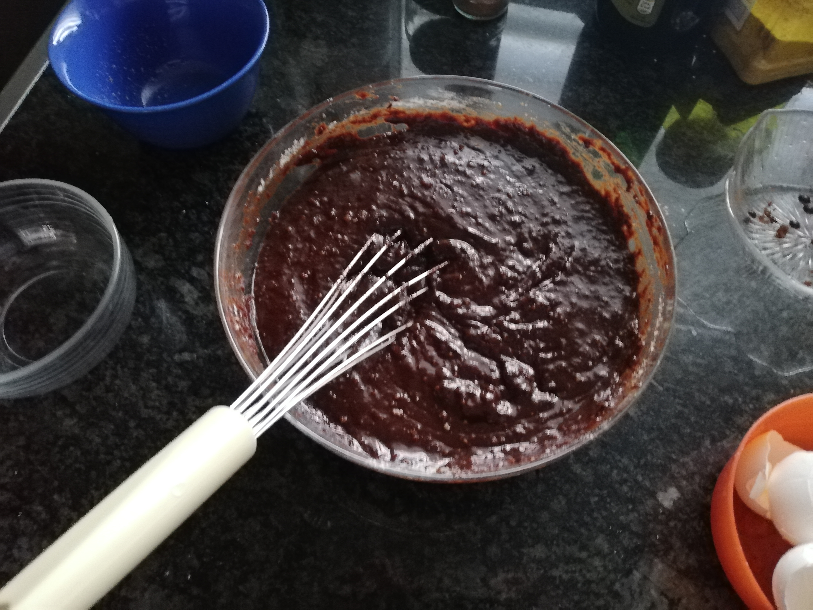
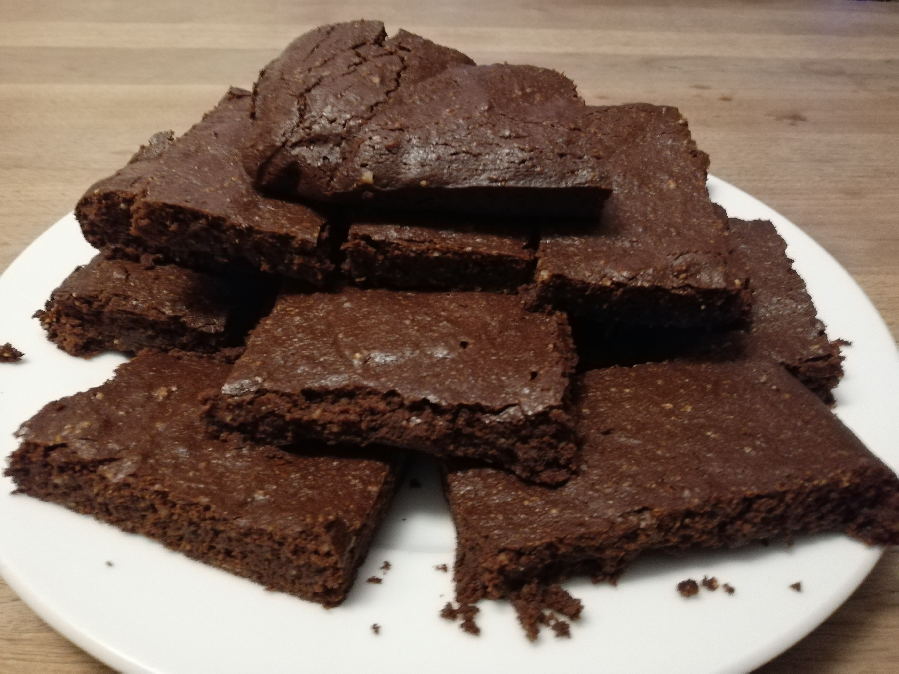

Brownie Recipe
On this website I will show you, how to bake delicious brownies. You just have
to follow the 6 steps. All you need are the following simple ingredients.
ingredients.pdf
Ingredients
- 5 eggs
- 250 grams of suggar
- 250 grams of butter
- 80 grams of cocoa powder
- 1 pinch of salt
- 65 grams of flour
- 200 grams of dark chocolate
- 100 grams of ground hazelnuts
- Optional: baking powder, vanilla powder

Step 1
First you have to put the butter and the suggar in a pot and let it melt on a hotplate. Don't cook it too long and take care that it doesnt burn in your pan. In the meantime, you can crush your chocolate.
Step 2
When the mixture starts to melt, you can remove it from the cooking plate. After that you have to add the chocolate in the pot and let it melt too. If you want to, you can also add a pinch of salt and some vanille powder to your mixture.

Step 3
Now you can pour the mixture into a bigger bowl, so it’s easier to mix it afterwards. Add the cocoa powder to the mixture and mix it until it has an even consistency.

Step 4
Add the eggs to your mixture one by one. Keep mixing the dough. After you added the eggs, you can put the flour in the bowl and mix it too until it is evenly mixed.
Step 5
Now your dough is almost finished. Add the ground hazelnuts and mix it. You could also use other nuts or just skip this step. If everything is mixed you can go to the next step.
Step 6
Put the mixture in a rectangular baking pan. Then you can bake it at 180° celsius with air circulation. To see if your brownies are finished, you can stick a toothpick in them and take it out again. If theres still just a bit chocolate on the toothpick, your brownie is finished.

Result
At the end, my brownies were a bit thin, because my baking form was very wide, but the brownies were still very tasty. If you want them to get bigger, you have to add some baking powder to it in step 2.
